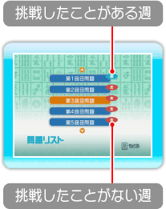

19 |
井出名人問題 |
 |
井出名人が制作した「どの牌を捨てるべきか」という問題に挑戦できます。「最新の問題」か「問題リスト」を選んで始めましょう。なお、問題は1週間に一度、4問ずつ配信されます。 ※「最新の問題」はWiiConnect24の設定が「ON」のときに受信できます。詳しくはWii本体取扱説明書 機能編（Wiiオプション）をご覧ください。 ※問題の配信スケジュールは変更することがあります。また、本ソフト発売後、予告なく終了する場合があります。あらかじめご了承ください。 ● 最新の問題 ・解説

● 問題リスト ※WiiConnect24で最新の問題がうまく配信されないときは、問題リストから問題をお楽しみください。 |
 |
 |
 |